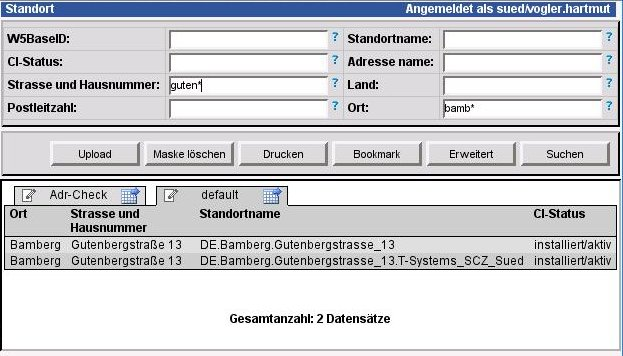

Dokumentationsregeln W5Base
|
Stand: |

Format
Es kommt OpenOffice Version 2.3 zum Einsatz.
Die
ODT (OpenOffice Textdokument) Datei ist immer der Master.
Es
werden nur JPG Dateien verwendet – bei Bedarf mit weissem
Hintergrund.
Variante Textblock
Der Textblock wird ohne Nummerierung hinter die Aufzählung eingefügt, und erhät die Formatvorlage „Textkörper“
Einbindung von Grafiken
Variante Text mit Grafik rechts
Diese Variante wird über eine Tabelle realisiert.
|
Dies ist der Beschreibungstext, der links neben dem Text erscheinen soll. Dieser kann u.U. Kürzer sein, als die Grafik auf der rechten Seite. Durch die Tabelle wird der Textfluß aber wieder syncroniesert. Die Tabelle selbst erhält keinen Rahmen. Der Text in der Tabelle erhält die Formatvorlage „Tabellen Inhalt“. Der Textblock links sollte nur halb genutzt werden.
|
|

Variante Tip Box
Eine Tip Box ist immer ein Textrahmen der möglichst immer über die gesamte Seitenbreite (16cm) geht und mit „Blassgelb“ hinterlegt wird:
Tip: Dies ist ein Tip Text. Der Tip Text
enthält IMMER nur Text. Grafiken darin würden in HTML
nicht korrekt dargestellt werden. Es darf keine „automatische“
Höhe eingestellt werden. Dies funktioniert nicht im Mozilla.
Variante Grafik auf voller Breite
Wie Variante 3 nur, dass die Grafik auf der gesammten Seitenbreite dargestellt wird. Die Breite der Grafik wird dann auf 17cm einstellt und zentriert.

Beschriftungen in Grafiken
Pfeile und Beschriftungen in Screenshots werden mit OpenOfficeDraw erstellt. Schrift 11pt Arial und die Pfeile in Dunkel rot.
Inhaltsverzeichnis
Am Ende der Doku ist immer ein Inhaltsverzeichnis einzufügen – ansonsten ist dieses Dokument als Basis für die Erstellung von Dokus zu verwenden.
Inhaltsverzeichnis
Inhaltsverzeichnis
1 Format 2
2 Variante Textblock 2
3 Einbindung von Grafiken 2
3.1 Variante Text mit Grafik rechts 2
3.2 Variante Tip Box 2
3.3 Variante Grafik auf voller Breite 3
4 Beschriftungen in Grafiken 3
5 Inhaltsverzeichnis 3
6 Inhaltsverzeichnis 4